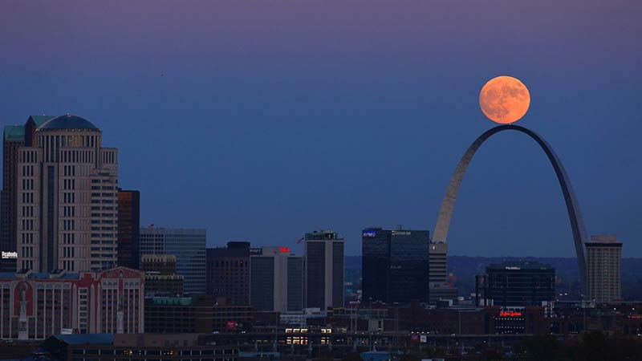

The moon is awesome! If you love the moon as much as we do, then come hang out with us and talk about the moon, its phases, landings, and anything moon-related! We are the St. Louis chapter of the Lunaphiles organization, dedicated to all things having to do with the moon. If you are looking for some people to look at the moon with, then you've come to the right place. We're looney for the moony.
